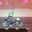
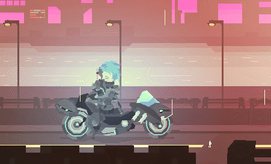

 Flux
Detalhes
|  | |
| Tempo de jogo | Não Jogado |
| Última Atividade | Nunca |
| Adicionado | 04/04/2025 0:19:57 |
| Modificado | 04/04/2025 0:22:24 |
| Status de Conclusão | Not Played |
| Biblioteca | Itch.io |
| Fonte | itch.io |
| Plataforma | PC (Windows) |
| Data de Lançamento | 17/02/2017 |
| Pontuação da Comunidade | |
| Avaliação da crítica | |
| Pontuação do Usuário | |
| Gênero | Music |
| Desenvolvedor | |
| Editor | |
| Funções | |
| Links | Itch |
| Tag | [GGDeals] Synced |
Descrição
FLUX presents a variety of limited-difficulty experiences: Interactive fiction with a series of mini-games that challenge you to type, hack-n-slash, organize or fidget to earn credits and purchase numerous cosmetic items: hairstyles, helmets, outfits and upgrades! Designed to allow players to alternate between chill and twitch-based game modes, the game provides players with a number of activities to engage with that offer zero consequences. Flux and chill!
Wanderer, a blue-haired ex-military swordsman, spends their nights joy riding/flying through the streets/skies of a sprawling cyberpunk cityscape. Through conversations with Wanderer's girlfriend and local NPCs you'll learn more about the world and reveal many answers to mysteries surrounding those that live there.


- Many Minigames in One: Fiction, Beat-em-up, Typing, Fidget, Rhythm, Reflective activities are available as "jobs" you can take each day, each with their own objectives and pace!
- Cosmetics + Cybernetics: Earn credits throughout your experience and spend them on new outfits, helmets, hairstyles and augments for your body.
- Customizable and Chill Tunes: Listen to the 80s Chillwave groove provided by Quantum Dylan or replace the provided .mp3 files in the install directory and create your own soundscape!
- Compelling World: Text your girlfriend, listen to the news, interact with your environment and converse with locals to learn more about the game’s characters and world.
- Built in Flash: Yeah, THAT Flash, which means the file size is small and loading times are nonexistent!

Flux's game modes are treated as "jobs" each day. By participating in one, you shift the game forward in time. Each mode has a Flux value representing the game's music volume and speed rate that rise and fall depending on the mode's mechanics:
- Groove: A traditional rhythm activity tasking players with pressing the correct inputs at
- Freestyle: A fidget style game where you define your own rhythm, reflect and zone out to the beat.
- Challenge: A typing-oriented game where you are given random letters A-Z to press. This tests your awareness of each letter's position on the keyboard.
- Spelling: A typing-oriented mode where you are tasked with spelling out entire words to increase your Flux.
- Glyph: A visual challenge where you must rotate the objects on the right with the arrow keys to match the positions of the objects on the left.
- Rash+Slash: An action-oriented mode that pits you against incoming enemy robots. Use your trusty katana to cut your way through the enemy!
- Assault: A beat-em-up mode that throws you into the heat of battle, challening players to survive a gauntlet of robots and enemy soldiers that are armed to the helmet with special attacks, a variety of weapons and keep on coming in waves.
- Mecha: Like Freestyle, but in the open skies above the city. Reflect, find your groove and enjoy the view.
- Armament: An action-oriented mode that has you defending the skies with your Mech airship. Take out the incoming robots with your blasters!

In order to add your own music you must have the following: an mp3 format music file, the file renamed to "track1", "track2", "track3", "track4" or "track5", and finally the file must be added to the game's included Music folder. Once the game is run it'll automatically load up these tracks sequentially as you begin to cruise. If you want to play another song, simply stop cruising and begin again to "skip" that track!
If you enjoy the music as much as I do,give Quantum Dylan a listen!
Special Thanks: Carrie Heeter, Elizabeth LaPensee, Andrew Dennis, Casey O'Donnell, and Willow for being a great BUNDLER